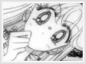

Entity » The Girl» Just a Dumb Blond? This section's primary goal is to clarify and disprove some stereotypes previously associated with Minako. All counter-arguments involving Minako below may be regarded as facts. Many people tend to categorize Minako as a duplicate of Sailor Moon, a ditzy, shallow blond. This is a baseless assumption, offensive to many. Not being the smartest person in the series is hardly a negative quality, and seeing as the Sailor V manga was created before the BSSM manga, it's pretty safe to say that the latter was actually based off of the former. In addition, Naoko created Sailor Venus based on herself. Therefore, Sailor Moon is actually based on Sailor Venus. A typical (and frequently wrong) stereotype of a blond, blue eyed girl is that she is dumb. Surely we've all heard our share of blonde jokes. As the factual and very effective leader of the senshi, I can assure you that Sailor Venus is nowhere near 'dumb.' The senshi team doesn't particularly need another brain on the team. Mizuno Ami is has that field covered. Other negative traits that have been directed towards Minako include her inability to love and her insecurity. Lets talk about these stereotypes. It's quite obvious that Minako doesn't have a steady boyfriend, as with the other inner senshi except Usagi. However, the other three inners all have some male present in their lives. Ami and Urawa obviously have some kind of attraction between each other, Rei and Yuuchiru also have a more-than-friends relationship, and Mako certainly enjoys her close friendship with Shinozaki. Minako was never shown to have a particular man in her life. As the manga evidence suggests, this is due to Adonis's cursed fortune to her that would never allow her to have a successful romantic relationship. This fortune seems to have worked effectively throughout the years, for Minako has been heartbroken numerous times subsequent to Adonis's death. Occasionally, she is willingly hurt by love due to her immeasurable kindness towards her loved ones. Minako has the occasional tendency to be insecure in the anime. Between her troubled past, unsuccessful relationships and her responsibilities as a senshi and leader, she becomes more susceptible to self doubt with each failure. Additionally, her personality makes her reluctant to reveal her problems even to close friends for fear of disturbance, a quailty that's often mistaken for arrogance. The choices she makes often involve her friends' safety and happiness, and the tradeoff is her own safety and happiness. Minako's strengths strongly overshadow her weaknesses. Her exceptional leadership abilities is crucial to the survival and effectiveness of the entire team. Without a leader, a team with the best members is as worse off as any. Sailor Venus has the cunning, courage and devotion that makes her deserving of the leadership position. This is effectually suggested in the manga. Even in the anime, the controversial topic on whether she is the actual leader is confirmed in Sailor Stars, the last season. Although her leadership ability is rather unnoticeable in the anime, it is noticeably apparent in the manga. Many of Minako's strong points are covered in other sections, so they will not be covered here. As always, factual evidence can easily disprove any baseless assumptions. |